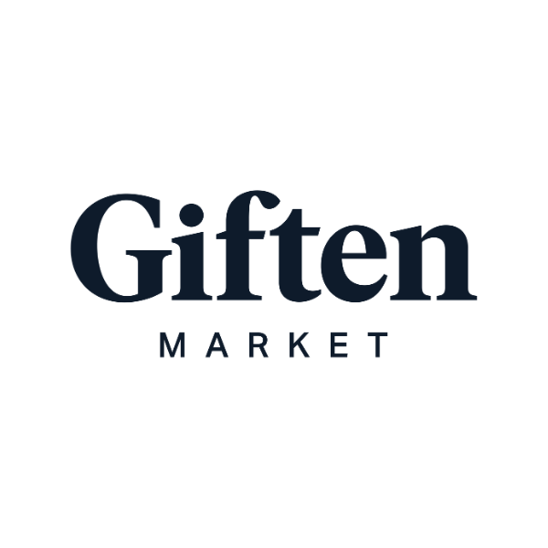
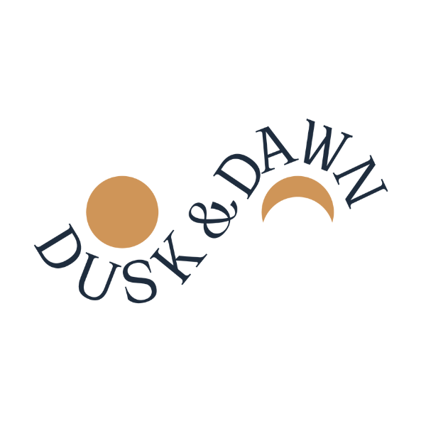

Builder of consumer brands. Operator of a U.S. manufacturing and fulfillment business. Corporate gifting that people actually keep.
Martha Krueger is the founder and CEO of Giften Market, a vertically integrated corporate gifting company in Minnesota. Since founding it in 2019, she has grown it into a portfolio of four house brands, including two acquisitions, with more than 75,000 gifts delivered, sourced from 250+ small American makers and shipped from the company's own manufacturing and fulfillment studio.
Martha Krueger is the founder and CEO of Giften Market, a corporate gifting company built on a simple conviction: a gift only matters if it gets used. Everything Giften makes is designed to be kept, not stored.
She founded Giften Market in 2019 after years of frustration with corporate gifts that looked generic and felt like an afterthought. Rather than reselling other people's products, she built the company to control the whole experience end to end: design, sourcing, manufacturing, assembly, and delivery all happen inside Giften's own facility outside Minneapolis. The team pours its own candles, kits every box by hand, and ships more than 75,000 gifts to date from a single studio in Edina, Minnesota.
That vertical integration is what lets Giften do what most gifting companies cannot: custom branding on real products, per-recipient personalization, and gifting programs that run on a schedule across an entire year rather than a one-time send in December. Giften serves corporate clients across employee lifecycle gifting, client appreciation, and branded enterprise programs, alongside a direct-to-consumer catalog with more than 10,000 repeat customers.
Along the way Martha has built a portfolio of four house brands under the Giften roof. Three were developed from scratch: the flagship Giften Market line of curated gift boxes, Liam & Louisa baby and new-parent essentials, and Greenwich Gourmet small-batch food and pantry gifts. The fourth came through acquisition: Martha bought two companies, a skincare line and a candle maker, and rolled them into a single new brand, Dusk & Dawn, now poured and finished in the Giften studio. All four run on the same in-house manufacturing, assembly, and 250+ maker supply chain.
Giften Market has been named a Best Care Packages pick by New York Times Wirecutter, is WBENC certified as a women-owned business, and has been featured in Elle Decor, Good Housekeeping, and Southern Living. Martha has been quoted in USA Today on small business and entrepreneurship. She is a 2026 Tory Burch Foundation Fellow, a 2024 recipient of the Antares REACH Boost Camp grant from Antares Capital and the Global Entrepreneurship Network, a graduate of Goldman Sachs 10,000 Small Businesses, and an alum of the gBETA accelerator by gener8tor (2020).
She writes and speaks about the unglamorous parts of building a physical-products company: repeatable B2B pipeline, running manufacturing and fulfillment on lean systems, and using AI as an operating layer rather than a novelty.
She lives in Minnesota.

Giften Market is a curated corporate gifting company that designs, manufactures, assembles, and ships gifts from its own studio in Edina, Minnesota. Companies use it for employee milestones, client appreciation, and branded gifting programs that run all year. Every box is sourced from small American makers and built by hand.
Design, sourcing, manufacturing, kitting, and fulfillment under one roof. No third-party warehouse, no outsourced assembly. That is why custom branding and personalization ship in days, not weeks.
A 250+ maker supply chain across the country, with in-house candle production and hand assembly in Minnesota. A 2024 Antares REACH grant funded new manufacturing equipment for the studio.
Employee lifecycle, client appreciation, and enterprise brand programs with recurring sends, recipient-level personalization, and inventory held for the client.
75,000+ gifts delivered, 10,000+ repeat customers, and a Best Care Packages pick from New York Times Wirecutter.
Beyond founding Giften Market, Martha has built a portfolio of house brands that are curated, designed, manufactured, and assembled in the company's Minneapolis facility. Three were launched from scratch to fill gaps no outside vendor covered well. One, Dusk & Dawn, was formed by acquiring two companies and relaunching them as a single brand. Each now stands on its own.
The flagship line of curated gift boxes for personal and corporate occasions.

Formed from two acquisitions, a skincare line and a candle maker, relaunched as one brand. Poured and finished in house.
Baby and new-parent essentials, from swaddles to the keepsake suitcase.
Small-batch food and pantry gifts, built to ship and built to be eaten.
Selected for the Tory Burch Foundation Fellows Program, Grow Pathway, a year-long program for women entrepreneurs scaling established businesses.
One of 33 small business owners nationwide selected by Antares Capital and the Global Entrepreneurship Network. The award funded new manufacturing equipment for the Giften studio.
Graduate of the Goldman Sachs 10,000 Small Businesses program for growth-stage business owners, and a 2020 alum of gBETA, the gener8tor accelerator for early-stage founders.
Giften Market is certified by the Women's Business Enterprise National Council, the national standard for women-owned business certification.
Giften Market named a Best Care Packages pick by Wirecutter, the New York Times product review publication.
Martha quoted in USA Today; Giften Market products featured in national lifestyle and home press.
Available for podcasts, panels, and founder communities. She speaks from the operator's seat, with real numbers.
Giften Market has also been featured by The New York Times Wirecutter, Elle Decor, Food Network, Food & Wine, BuzzFeed, Tasting Table, Good Housekeeping, Southern Living, and USA Today. Full list at giftenmarket.com/pages/press.
One lineMartha Krueger is the founder and CEO of Giften Market, a vertically integrated corporate gifting company in Minnesota with four house brands and more than 75,000 gifts delivered.
Short bioMartha Krueger is the founder and CEO of Giften Market, a corporate gifting company that helps businesses send gifts people actually keep. Since founding the company in 2019, she has built it into a vertically integrated operation with four house brands (including two acquisitions), more than 75,000 gifts delivered nationwide, and its own manufacturing and fulfillment studio outside Minneapolis, sourcing from 250+ small American makers. Giften Market has been named a Best Care Packages pick by New York Times Wirecutter and is WBENC certified. Martha has been quoted in USA Today and is a 2026 Tory Burch Foundation Fellow, a 2024 Antares REACH grant recipient, and a Goldman Sachs 10,000 Small Businesses alum.
Company boilerplateGiften Market is a curated corporate gifting company based in Edina, Minnesota. Founded in 2019 by Martha Krueger, it designs, manufactures, assembles, and ships gifts from its own studio, sourcing from more than 250 small American makers, with over 75,000 gifts delivered to date. The company operates four house brands: Giften Market, Liam & Louisa, Greenwich Gourmet, and Dusk & Dawn, the last formed from two acquired companies. Giften Market has been named a Best Care Packages pick by New York Times Wirecutter and is WBENC certified as a women-owned business. Learn more at giftenmarket.com.
Name is spelled Martha Krueger. Company is Giften Market, two words, or Giften, LLC.
For press, speaking, partnerships, or corporate gifting programs, the fastest route is the Giften Market team.
hello@giftenmarket.com{kind=link}
{kind=link}
{kind=link}